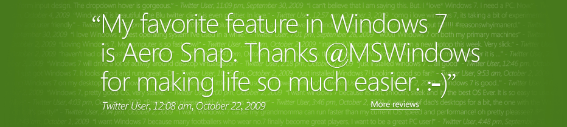
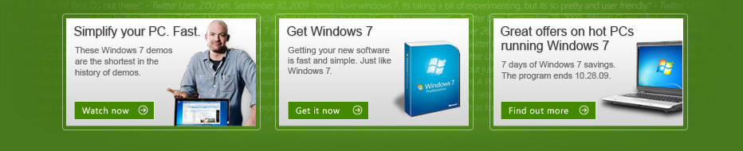

The Wayback Machine - http://web.archive.org/web/20091022130128/http://www.microsoft.com/en/us/default.aspx
United States
Change
Enhance your online experience with Microsoft Silverlight 2
Microsoft Silverlight delivers a new generation of high-quality audio and video, engaging media experiences, and interactive applications for the Web.
Windows
Windows
All Windows Products
Windows 7
Windows 7 Help & How-to
Windows Vista
Windows Vista Help & How-to
Windows XP
Windows phone
Windows Automotive
Windows Azure
Windows Embedded
Windows Media Player
Windows Internet Explorer
Earlier Windows Versions
Windows Servers
Windows Server
Windows Essential Business Server
Windows Small Business Server
Windows Home Server
Windows Server Update Services
Windows Live
All Windows Live Products
Windows Live Hotmail
Windows Live Messenger
Windows Live OneCare
Windows Live Spaces
Windows Live Toolbar
Office
Office
All Office Products
Home & Student
Office for Business
Office Live
Office Servers
Office Trials
Product Information
Office Resources
Clip Art and Media
Office Help & How-to
Office Online Training and Demos
Office Templates
All Products
Most Popular
Bing
Bing cashback
Internet Explorer
Microsoft Advertising
Microsoft Security Essentials
Office
Windows
Windows Live
Business Software
Bing Maps
Microsoft Amalga
Microsoft Dynamics Products
Microsoft Forefront
Microsoft Office Live
Microsoft Online Services
Windows Essential Business Server
Windows Small Business Server
Design & User Experience
Microsoft Expression
Microsoft Silverlight
Developer Tools
.NET Framework
ASP.NET
MSDN Subscriptions
Robotics Developer Studio
Visual Basic
Visual C
Visual C#
Visual Studio
XNA
Entertainment
DirectX
Microsoft Mediaroom
MSN
MSN Games
MSNBC
PC Gaming
Windows Media Center
Xbox Home
Xbox Live
Zune
Hardware
All PC Hardware
Digital Communications
Media Center Peripherals
Microsoft Surface
Mouse & Keyboard Products
MSN TV
PC Gaming Hardware
Xbox Gaming
Home & Educational Software
AutoCollage
Encarta
Healthvault
Money
MSN Direct
MSN Internet Access
Office Home & Student
Songsmith
Streets & Trips
Windows Home Server
Windows Live OneCare
Works
WorldWide Telescope
Macintosh
All Macintosh Products
Mac Expression
Mac Mouse & Keyboard Products
Mac Office
Mobile Devices & Software
Microsoft My Phone
Microsoft Tag
Mobile Software Catalog
Ultra-Mobile PC
Windows phone
Windows phone devices
Servers
All Server Products
BizTalk Server
Exchange Server
Server Trials
SharePoint Server
SQL Server
TechNet Subscriptions
Windows Server
Buy Now
Most Popular
Microsoft Store
Product Information Center
Xbox Live Marketplace
Zune Marketplace
Bing cashback
Microsoft Store
Windows Software
Office Software
Design & Developer Software
Entertainment
Hardware
Home & Reference Software
Partner Solutions
U.S. Providers (Pinpoint)
All Worldwide Solution Providers
Business Solutions
Business Software
Volume Licensing
Downloads & Trials
Downloads & Trials
Download Center
Internet Explorer 8 Downloads
Microsoft Update
MSDN Evaluation Center
MSN Tech & Gadgets Downloads
Office Clip Art & Media
Office Marketplace Downloads
Office Templates
TechNet Evaluation Center
Trial Software
Windows Live Downloads
Windows Media Player Downloads
Windows Mobile Downloads
Partner & Customer Solutions
Partner Solutions
U.S. Providers (Pinpoint)
All Worldwide Solution Providers
Microsoft Partner Program
OEM Partner Center
Windows 7 Compatibility Center
At Home & At Work
Design
Get Game Smart
Microsoft At Home
Microsoft At Work
Microsoft Student
Microsoft Videos
Windows Online Help
For IT Pros
IT Pro Downloads
TechNet
TechNet Subscriptions
Tech Centers
Training & Certification
For Business & Organizations
Business & Industry
Business Intelligence
Enterprise Business Center
Everybody’s Business
Industry & Public Sector
Microsoft Advertising
Microsoft Dynamics
Microsoft Online Services
Microsoft Retail
Microsoft Services
Midsize Business Center
Small Business Center
Startup Business Center
Volume Licensing
For Developers
Beginner Developer Learning
Developer Centers
Download & Code Center
MSDN
MSDN Library
MSDN Subscriptions
Training & Certification
Security & Updates
Security & Updates
Security Home
Microsoft Security Essentials
Microsoft Update
Windows Server Update Services
For Home Users
For Developers
For IT Pros
For Small Business
Training & Events
Training & Events
Developer Training
Elevate America
Events & Webcasts
IT Pro Training
Office Online Training
Training & Certification Resources
Training Class Locator
Support
Product Support
Microsoft Support Home
Internet Explorer Solution Center
Knowledge Base
Microsoft Forums
Microsoft Update
MSDN
Office 2007 Solution Center
TechNet
Windows 7 Top Solutions
Windows Compatibility Center
Windows Vista Solution Center
Windows XP Solution Center
How-To Resources
Learning Tools
Microsoft Videos
Office Help & How-to
Windows 7 Help & How-to
Windows Vista Help & How-to
Windows XP Help & How-to
About Microsoft
About Microsoft
About Microsoft
Careers
Contact Us
Corporate Citizenship
Customer and Partner Experience
Environmental Sustainability
For Journalists
Investor Relations
Legal and Corporate Affairs
Microsoft Research
Microsoft Worldwide
Trustworthy Computing
Unlimited Potential

